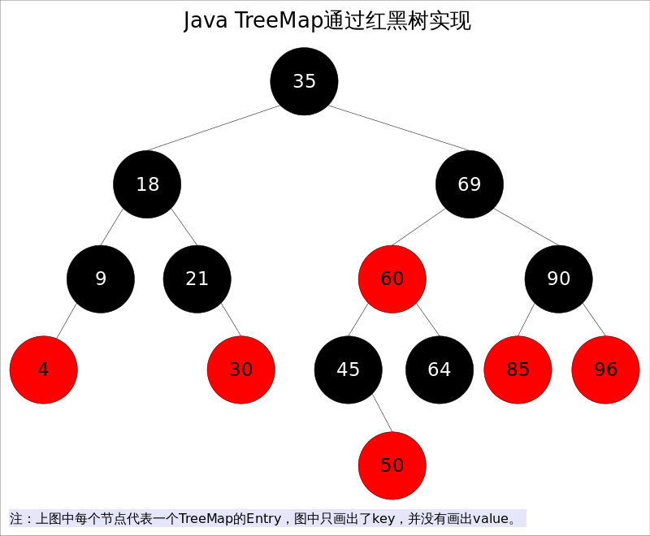
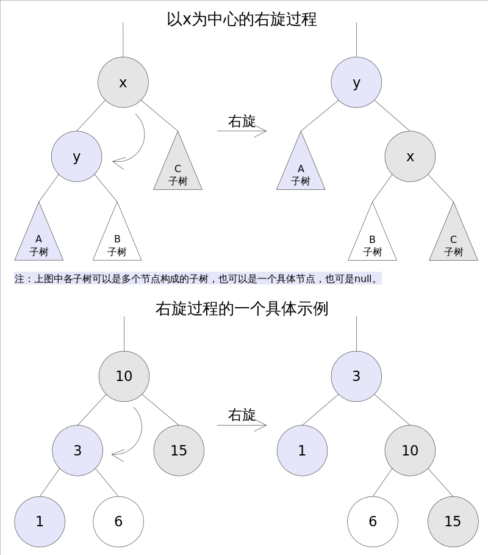
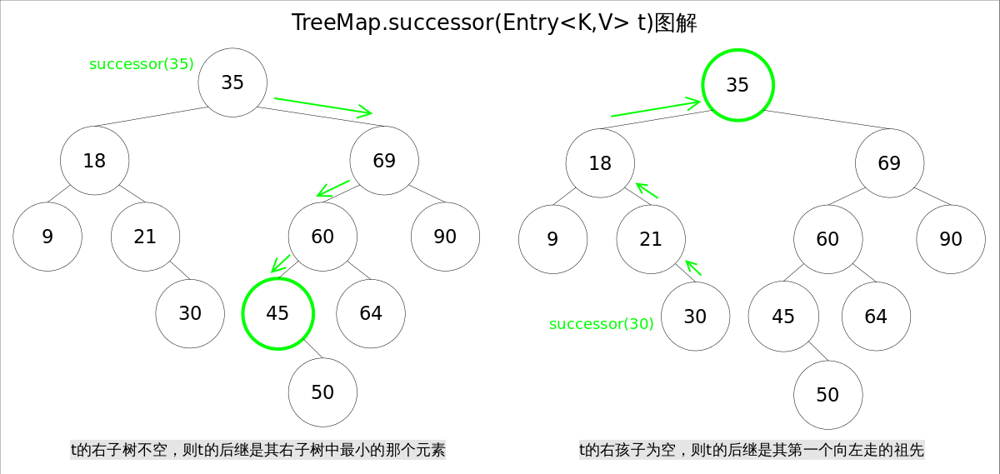
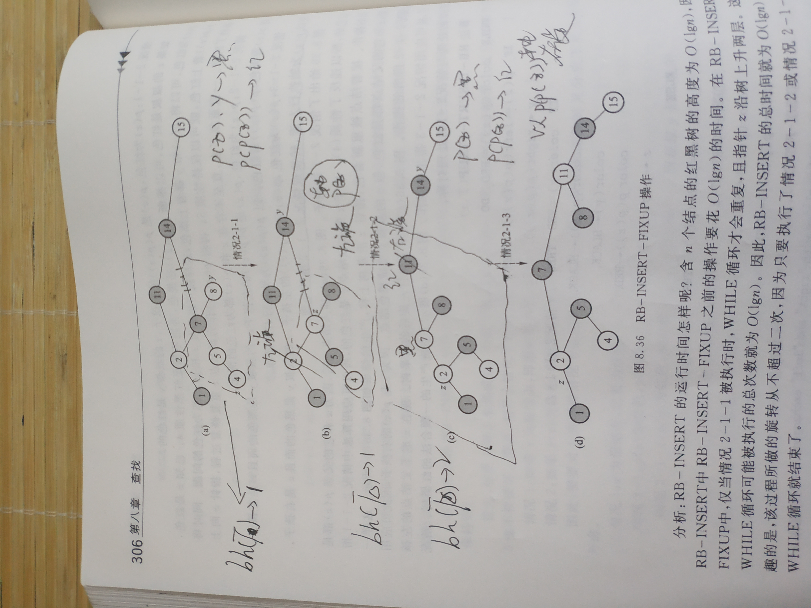
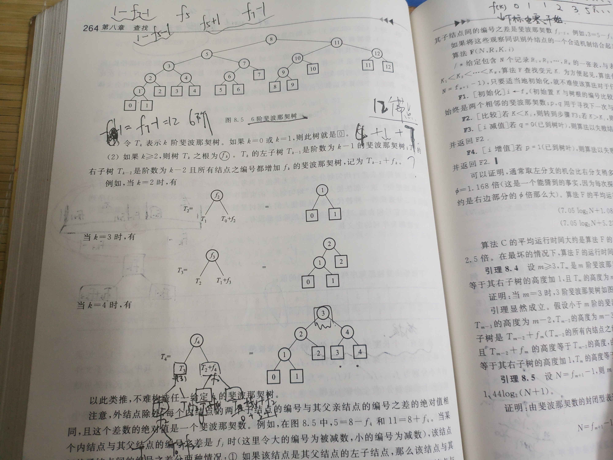

红黑树
红黑树是一种近似平衡的二叉查找树，它能够确保任何一个节点的左右子树的高度差不会超过二者中较低那个的一陪。具体来说，红黑树是满足如下条件的二叉查找树（binary search tree）：
- 每个节点要么是红色，要么是黑色。
- 根节点必须是黑色
- 每个外节点（nil）是黑色的
- 红色节点不能连续（也即是，红色节点的孩子和父亲都不能是红色）。
- 从某一结点到达其子孙外节点的每一条简单路径上包含相同个数的黑节点。

红黑树定义摘自《数据结构》第二版,刘大有
注：在树的结构发生改变时（插入或者删除操作），往往会破坏上述条件4或条件5，需要通过调整使得查找树重新满足红黑树的约束条件。
预备知识
二叉查找树：左小右大，以此来对应左旋右旋后子节点的位置变化
前文说到当查找树的结构发生改变时，红黑树的约束条件可能被破坏，需要通过调整使得查找树重新满足红黑树的约束条件。调整可以分为两类：一类是颜色调整，即改变某个节点的颜色；另一类是结构调整，集改变检索树的结构关系。结构调整过程包含两个基本操作：左旋（Rotate Left），右旋（RotateRight）。
节点定义
1 | class TreeMap{ |

右旋
右旋的过程是将x的左子树绕x顺时针旋转，使得x的左子树成为x的父亲，同时修改相关节点的引用。旋转之后，二叉查找树的属性仍然满足。

1 | /** From CLR */ |

寻找后继节点
比当前节点大的最小元素
查找思路：
- t的右子树不空，则t的后继是其右子树中最小的那个元素。
- t的右孩子为空，则t的后继是其第一个向左走的祖先。

1 | /** |
插入节点
插入节点，重构二叉查找平衡树
1 | public V put(K key, V value) { |
插入or更新节点
颜色调整
- 每个节点要么是红色，要么是黑色。
- 根节点必须是黑色
- 每个红色节点的两个子节点都是黑色。(从每个叶子到根的所有路径上不能有两个连续的红色节点);红色节点不能连续（也即是，红色节点的孩子和父亲都不能是红色）。
- 对于每个节点，从该点至null（树尾端）的任何路径，都含有相同个数的黑色节点。
性质1规定红黑树节点的颜色要么是红色要么是黑色，那么在插入新节点时，这个节点应该是红色还是黑色呢？ 答案是红色
如果插入的节点是黑色，那么这个节点所在路径比其他路径多出一个黑色节点，这个调整起来会比较麻烦（参考红黑树的删除操作，就知道为啥多一个或少一个黑色节点时，调整起来这么麻烦了）。如果插入的节点是红色，此时所有路径上的黑色节点数量不变，仅可能会出现两个连续的红色节点的情况。这种情况下，通过变色和旋转进行调整即可，比之前的简单多了。–摘自红黑树详细分析，看了都说好
分情况。。。
设置颜色的意义：以此来作为左旋右旋的判断
1 | /** From CLR */ |
红黑树颜色调整
当插入节点为红色节点时则性质1， 3， 5永远成立，只有性质2：根节点黑色，性质4：红色节点不连续会被破坏。
待插入节点位节点Z，父亲节点p(Z)
情况1. 如果Z为根节点，则原树为空，则性质2被破坏
情况2. 如果p(Z)为红色，则性质4被破坏
细分具体情况：
1 | 情况1. Z为根节点，着色为红色 |
具体情况具体调整：
- 情况1. 着色为黑色OK
- 情况2-1. p(Z)为红色，p(Z)是p(p(Z))的左孩子。
- 1.1. 情况2-1-1. p(Z)为红色，p(Z)是p(p(Z))的左孩子，z的叔叔节点y为红色。
p(Z)，y 黑 p(p(Z)) 红
2.1.2. 情况2-1-2. p(Z)为红色，p(Z)是p(p(Z))的左孩子，z的叔叔节点y为黑色而且z为左孩子。
p(Z) 黑 p(p(Z)) 红 以p(p(Z))为轴右旋
2.1.3. 情况2-1-3. p(Z)为红色，p(Z)是p(p(Z))的左孩子，z的叔叔节点y为黑色而且z为右孩子。
以p(Z)为轴左旋,转换成情况2-1-2

删除节点
左右子树
- 左右子树均不为空，左子节点ok， 右子节点后继节点左子节点
…相较于插入操作，红黑树的删除操作则要更为复杂一些。
删除操作首先要确定待删除节点有几个孩子，如果有两个孩子，不能直接删除该节点。
而是要先找到该节点的前驱（该节点左子树中最大的节点）或者后继（该节点右子树中最小的节点），
然后将前驱或者后继的值复制到要删除的节点中，最后再将前驱或后继删除。
由于前驱和后继至多只有一个孩子节点，这样我们就把原来要删除的节点有两个孩子的问题转化为只有一个孩子节点的问题，问题被简化了一些。
我们并不关心最终被删除的节点是否是我们开始想要删除的那个节点，只要节点里的值最终被删除就行了，至于树结构如何变化，这个并不重要。
1 | /** |
结构调整… …
颜色调整
1 | /** From CLR */ |
待删除节点y
- 删除节点为红色(ok)
- 删除节点为黑色(黑高-1，红色节点变连续)
- y为根节点
- p(y)与child(y)为红色… …
补充
二叉查找树
中序遍历下获取数据的增序序列
前驱结点
比当前节点小的最大节点
右父节点树左父节点<左子树<当前节点<右子树<右父节点树<右父节点树右子节点
左父节点树左子节点<左父节点树<左子树<当前节点<右子树<左父节点树右父节点
前驱结点：左子树，左父节点
- 若左子树存在，左子树中最右
- 若左子树不存在，左父节点“树”：最大，左父节点or右父节点树的左子节点… …
后继节点
比当前节点大的最小节点
右父节点树右子节点>右父节点树>右子树>当前节点>左子树>右父节点树左父节点
左父节点树右父节点>右子树>当前节点>左子树>左父节点树>左父节点树左子节点
- 若右子树存在，右子树最左
- 若右子树不存在，右父节点“树”：最小，右父节点or左父节点树右父节点… …
删除节点
删除操作首先要确定待删除节点有几个孩子，如果有两个孩子，不能直接删除该节点。
而是要先找到该节点的前驱（该节点左子树中最大的节点）或者后继（该节点右子树中最小的节点），
然后将前驱或者后继的值复制到要删除的节点中，最后再将前驱或后继删除。
由于前驱和后继至多只有一个孩子节点，这样我们就把原来要删除的节点有两个孩子的问题转化为只有一个孩子节点的问题，问题被简化了一些。
简化：右子节点的左子节点不空以及右子节点的左子节点为空均为简化操作的的实现
我们并不关心最终被删除的节点是否是我们开始想要删除的那个节点，只要节点里的值最终被删除就行了，至于树结构如何变化，这个并不重要。
图示
右子节点为空
左子节点直接替换ok
右子节点的左子节点为空
左子节点作为右子节点的左子节点 )
)
右子节点的左子节点不空
最左左子节点（即待删除节点的后继节点）替换待删除节点
最左左子节点的右子节点替换最左左子节点的原位
Example
1 | private void deleteEntry(Entry<K,V> p) { |
拓展
平衡二叉树
根据delta 平衡系数,调整高度
每个节点自带平衡系数
高度平衡二叉树
平衡系数 = h(RightTree) - h(LeftTree)
1 | +.- ： +1 0 -1 |
左旋
右旋
重量平衡二叉树
平衡系数β =
- 树为空，1/2
- 树不为空， 外节点数目（左子树）/总外节点数
相对于α的重量平衡二叉树
任意子树平衡系数 = β（T*）
1 | α<= β（T*） < 1-α |
斐波那契树
